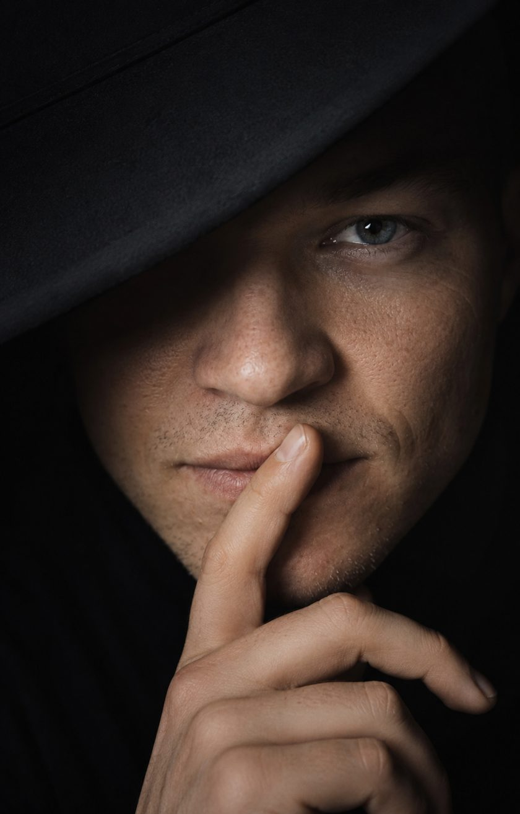

Art direction · Photography
Quiet Studies
A portrait experiment about restraint, anonymity, and the tension between being seen and staying hidden.
Available for selected projects
Building visual identities and digital experiences at the intersection of culture and technology.

01 / Selected work
A growing collection of self-initiated work exploring identity, atmosphere, and the space between physical and digital culture.
Art direction · Photography
A portrait experiment about restraint, anonymity, and the tension between being seen and staying hidden.
Editorial · Visual research
A study in framing and gesture, turning a familiar portrait into a graphic, editorial composition.
Culture,
translated
into form.
Digital design · Concept
An ongoing interface archive where typography, motion, and cultural references become new digital forms.
02 / About
I’m Justin, a 25-year-old digital design student based in Utrecht. My practice moves between art, fashion, and technology — looking for ideas that feel culturally aware, visually direct, and a little unexpected.
I use this space as both a portfolio and an open studio: a record of finished work, things in progress, and ideas worth keeping.
Start a conversation03 / Journal
Short observations on what I’m looking at, learning, and making.
001
01 Sep 2026 · 2 min
On using less to create more tension, and why the parts we withhold can carry the most weight.
002
28 Aug 2026 · 3 min
Moving away from the perfect portfolio and toward a space that leaves room for unfinished thinking.
003
25 Aug 2026 · 2 min
A note on designing digital work that carries references, attitude, and a point of view.
04 / Contact
Have an idea, collaboration, or
interesting conversation in mind?